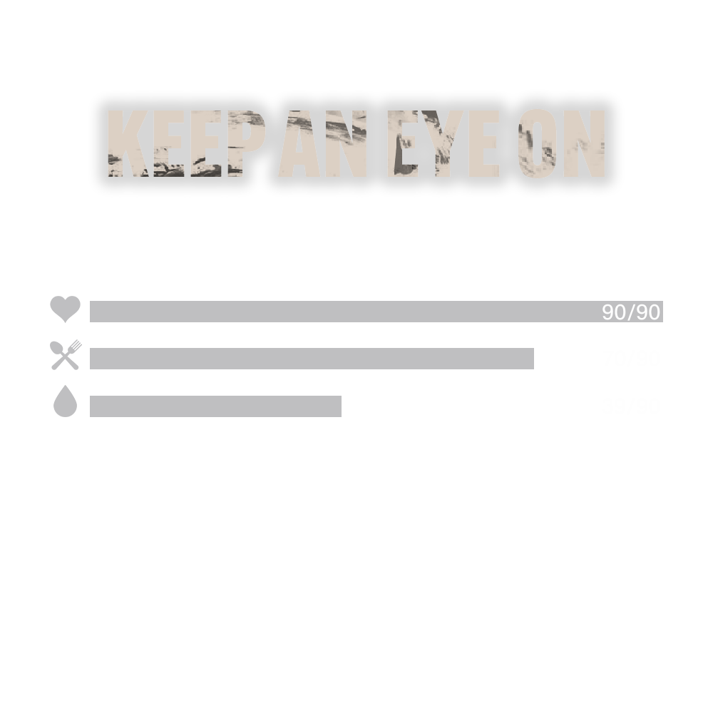

Game controls
Beginning of the game
Be careful, zombies are attracted to noise! Crouch (press ALT) and move slowly, you won't attract them. First of all, to survive you need to find things in the building:- Weapons are stored in the kitchen
- Food and water in the refrigerator
- Medicines can be found in the bath
You're out on the street and it's time to learn the basic mechanics of the game.
Main mission
Your character appears on the second day. On the third day, a circle will appear on the map that will decrease over time. If you are outside the circle, you will not lose health. Just try to stay inside the circle to make it easier to escape.On the fourth day, the helicopter will arrive somewhere in the circle area. Look up and listen to the sound to find the helicopter. Remember that most players will be in this area trying to kill other players looking for the helicopter.
There are three seats in the helicopter! Therefore, only three will survive and keep the found NFTs, the rest will die. If the fourth day ends and you don't fly away, you will die. There is no fifth day!
Basic indicators
The main character indicators are Health, Food and Water.Health is restored only with medications. In addition to the bathrooms, medicines can be found in pharmacies, hospitals, or kill the zombie-nurse.
If a character runs out of food or drink, his health will decrease until the character dies! Supplies can be found in stores, food vending machines or refrigerators. Find enough food and drink to survive until the fourth day.

Stamina - strategic element
Stamina is spent from running, dashing, jumping or hitting. This gets replenished but if it runs out, it takes a long to be replenished. Can temporarily increase the maximum stamina reserve by using an energy drink, coffee, or eating a pill.If you run out of stamina, you won't be able to jump high, run slower and fight slower.
Make the enemy lose all their stamina, and then attack him. This will give you an advantage in battle.
Weapon
In the game you can find a pistol, shotgun or machine gun. Find them:- In the closet (very small chance)
- Kill the zombie-policeman (small chance)
- Weapon room at the police station (small chance)
- Crashed helicopter. Only one on the map (100% chance)